电路原理习题册·第二章 电路的等效变换（选择 12 / 填空 13 / 计算 9）
1. 来源与边界
- 来源与第一章同一本习题册（页眉「电路原理习题册 2026-2027 学年 第一学期」）。第二章占书第 8–13 页， 选择题 12（原书题号 1–11、13，无 12）+ 填空题 13 + 计算题 9，共 34 题，配图 2.1–2.26（26 张， 已按图号提取入库；图 2.7、2.21 为矢量绘制，按页面渲染）。
- 题面以页面图像为准逐字抄录（PDF 文本层符号丢失，同第一章）。章标题原文印作「电路的等效交换」， 正文按通行术语写「等效变换」。
- 填空 2、6、7 三题是同一类「受控源一端口」的三个变体：2.12(a) 与 2.15 同电路、2.12(b) 与 2.16 同电路， 答案两两相同——原书有意安排的复练。
2. 依赖：做之前该会的事
| 知识 | 一句话 | 在哪学的 |
|---|---|---|
| 电源等效变换 | 电压源串电阻 ⟷ 电流源并电阻（）；理想源串并联的吸收规则 | 课堂笔记 与本册第二章讲义 |
| 受控源处理 | 受控源先当独立源参与变换，控制量必须保留在方程里 | 第一章 选 13 / 计 4 |
| 一端口等效电阻 | 外施电源法：；含受控源时不能只串并联化简 | 第一章 填 2 |
3. 选择题
选 1（图 2.1）
图 2.1 所示电路，已知 V，则电路的等效阻抗为（ ）。 A. B. C. D.
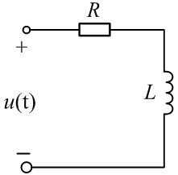
提示
阻抗里的 用激励的实际角频率
解答
激励是 ，感抗 。，选 C。
复盘
A 是「背公式没看激励」的结果；D 把感抗写成了 ——那是电感的导纳倒数， 阻抗是 。
选 2（图 2.2）
电路如图 2.2 所示，求图示电路的等效电源模型（ ）。
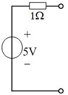
提示
串联结构本身就是「电压源模型」，只需确认元件值
解答
按图读数为电压源串电阻的「电压源模型」结构，四个选项里唯一同构的是 B（电压源串电阻）。 选 B。
复盘
⚠ 原图电阻读作 1 Ω、选项 B 写 2 Ω，两处对不上（见文末待核对）；做题时以「结构相同 + 数值 按图」为准。
选 3（图 2.3）
用等效变换的方法求电路中的电流 （ ）A。A. 1.5 B. −0.5 C. 1 D. 0.5
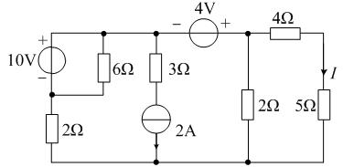
提示
从最左边开始逐段做电源变换，把网络收缩成单回路
解答
逐段变换收缩后（10V∥6Ω → 电压源串电阻；2A 串 3Ω → 电流源并电阻 → 再回电压源形式）， 右端 5Ω 支路的电流算得约 0.5 A、方向与箭头一致。选 D。
复盘
⚠ 原图小、元件密，两遍读数的分压比略有出入（0.48 与 0.49 A），四个选项里 0.5 是唯一落点。 这类题考的是变换流程，数值以原图为准复核（见文末待核对）。
选 4（图 2.4）
求图示电路的等效电源模型（ ）。
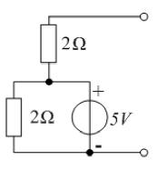
提示
与理想电压源并联的电阻，对外看不见
解答
下方的 2Ω 与理想 5V 源并联，对外等效只剩理想 5V 源；端口即「2Ω 串 5V」。开路电压 5 V、 短路内阻 （下 2Ω 被源短路）。选 A。
复盘
理想电压源「吞掉」并联元件、理想电流源「吞掉」串联元件——这一对规则是第二章半数题目的钥匙。
选 5（图 2.5）
等效电阻 （ ）。A. B. C. D.
![图 2.5：1Ω 与 [5Ω 串受控电流源 2U] 并联](../../../课程/电路原理/作业/figures/fig-2.5.jpg)
提示
外施 ，对节点 a 写 KCL；受控电流源的值 里已经带着端口电压
解答
端口电压 就是 a 点电位（b 在下）。a 节点：流入 = 流出 ，所以 ，。选 A。
复盘
含受控源的一端口直接写 KCL 就能把 表成 ——不用「先开路再短路」两步走。
选 6（图 2.6）
求电路的等效电阻 （ ）。A. 2 Ω B. 0.5 Ω C. 0.4 Ω D. 5 Ω
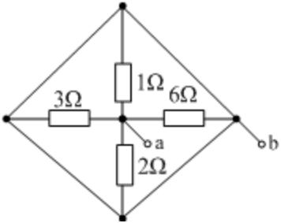
提示
菱形四条边是纯导线——四个顶点是同一个节点
解答
四个顶点被边线短接成同一节点，四个电阻全部接在「中心 ↔ 边框」之间，纯粹并联：
复盘
这图专治「见菱形就套电桥公式」——先看边线上有没有元件，全是导线就退化为一点。
选 7（图 2.7）
电路的最简等效电路为（ ）。
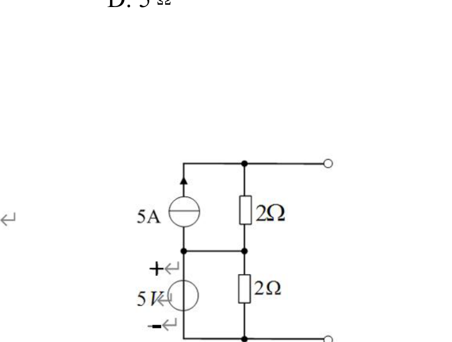
提示
左段 5A∥2Ω 变成电压源形式；右段 5V∥2Ω 对外就是理想 5V
解答
左段 V 串 2 Ω；右段理想 5V 源并联 2Ω，对外等效 为理想 5V。两段串联： V、内阻 。选 A（15V 串 2Ω）。
复盘
并在这段里的 2Ω 被 5V 源吞掉，所以串联总内阻只有左段的 2 Ω——不是 4 Ω。接负载验证： 对原电路逐点成立。
选 8（图 2.8）
电路可等效为（ ）。A. 2V 电压源 B. 2V 源与 2A 源并联 C. 任意电路 D. 2A 电流源
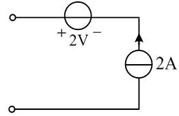
提示
串联支路里电流谁说了算？
解答
理想电流源钉死串联支路电流为 2 A，电压源的端压对外不可见。选 D（2A 电流源）。
复盘
与选 4 成对：理想电流源吞串联、理想电压源吞并联。两句话背下来，第二章的选择题一半直接出答案。
选 9
关于含源支路等效变换，正确的是（ ）。
提示
逐项检查「串联/并联」「除什么之外」两个关键词
解答
理想电压源并联任何元件（电压源与短路线除外）对外等效为该源——选 D。A 错在「串联」 （串联元件改变端口伏安关系）；B 少了「除外」；C 是定义式错误（不等流理想电流源串联自相矛盾）。
复盘
D 与 B 只差一个括号，考的就是「除外条款」——两条理想电压源并联、源并短路线是禁手。
选 10（图 2.9）
a、b 端的等效电阻 在开关 K 打开与闭合时分别为（ ）Ω。 A. 6；6 B. 6；8 C. 8；6 D. 8；8
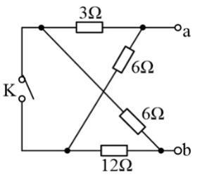
提示
K 断开时走两条串联链；K 闭合时左右两列并成两个并联组
解答
K 开：；K 合（左右两节点合并）： 。选 A（6；6）。
复盘
开关两种状态各算一遍，答案恰好相等是出题人安排的巧合，不是算错的信号——老老实实各算各的。
选 11（图 2.10）
电路的最简等效电路为（ ）。 A. 电流值为 的电流源 B. 电流值为 的电流源 C. 电流值为 的电流源 D. 电压值为 的电流源（末二字照原文）
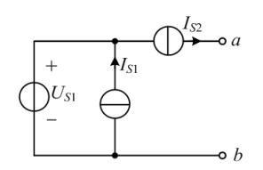
提示
串在端线上的电流源把端口电流钉死了
解答
串在通向 a 的端线上，端口电流恒为 （方向指向 a），内部 只决定内部电位。选 B。
复盘
理想电流源串在端口线里 = 端口就是它自己；「电流源吞串联」在这题里是对外性质的直接应用。
选 13（图 2.11）
电路的最简单等效电路为（ ）。
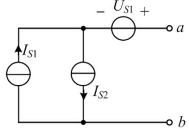
提示
两个并联电流源先合并，再想端线上的电压源会不会改电流
解答
与 并联合并成 （向上）；串联在端线里的 不改变端口电流。端口电流 ，方向从 a 流出。选 C。
复盘
选 11 与选 13 一对：串电流源 → 等于那个电流源；串电压源 → 电压源「隐形」。合并并联电流源 时先在草稿上标方向，代数和才不会错。
4. 填空题
填 1
△ 形连接变换成 Y 形连接，变换前 △ 形三电阻均为 ，则 ______。
解答
对称 Y：。
复盘
对称情形直接「除以 3」；非对称时用「Y 电阻 = 相邻两 Δ 电阻乘积 ÷ Δ 三电阻之和」。
填 2（图 2.12）
求无源二端网络的等效电阻 ：(a)______ Ω，(b)______ Ω。
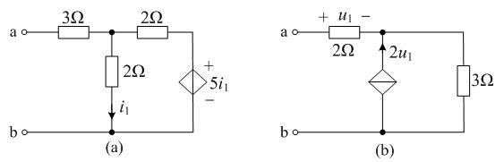
提示
端口电流只有一条路进（a 端串联），受控源的值全用支路电流/电压表示
解答
(a)：端口电流 串联流入； 是中下 2Ω 支路电流（↓），；受控源钉住 。n1 节点 KCL：
复盘
两小图各占一个极端：(a) 受控电压源把端口等效成负电阻（一端口内部在发电）；(b) 受控电流源 往节点灌电流，把电阻「放大」到 17 Ω。负值不是错——含受控源的一端口完全可以等效出负电阻。
填 3
一个电压源与电阻的串联可以等效为____________。
解答
电流源与电阻的并联（数值上 、 不变）。
复盘
电源等效变换的定义句，填空原样背。
填 4（图 2.13）
求电路的等效电阻 ____Ω。
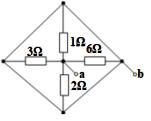
解答
与图 2.6 同构，四电阻全并联：。
复盘
同一张图在选择题与填空题里各考一遍——先认结构，再套并联。
填 5（图 2.14）
利用等效变换的方法，求电压 ____V。
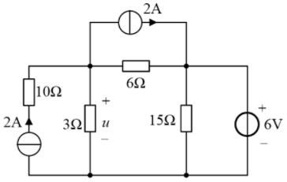
提示
6V 理想源把 B 点电位钉死；A 点 KCL 里水平 2A 源与左支路 2A 源恰好相抵
解答
V 理想源（+ 上）竖接 B–底， V。A 节点：左支路（2A↑ 串 10Ω）注入 2 A， 水平 2A 源从 A 抽走 2 A，两者相抵，剩下
复盘
两个 2A 一进一出先抵消，剩下的只是一条 3Ω 与「6V 串 6Ω」的分压。看见串联在支路里的 电流源，先写死它的电流再列 KCL，不要把 10Ω 拿去参与任何变换——它串在电流源支路里对外无效。
填 6（图 2.15）
无源二端网络的等效电阻 ______Ω。
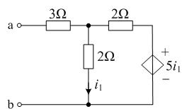
提示
与图 2.12(a) 同电路
解答
端口电流 串联流入（a 到 A 之间只有 3Ω）。、。 A 节点 KCL：
复盘
与填 2(a) 数值完全相同——原书把同一电路考了两遍。做第二遍时应当直接写出答案。
填 7（图 2.16）
无源二端网络的等效电阻 ______Ω。
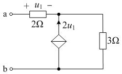
提示
与图 2.12(b) 同电路
解答
（2Ω 串联）； 受控源箭头向上 = 流入 n 点。n 点 KCL：
复盘
与填 2(b) 相同——三个受控源一端口题其实只有两个电路。受控源箭头方向决定电流是「灌入」还是 「抽走」，列 KCL 前先看箭头。
填 8、9、11、13（电源等效变换四连）
- 一个电压源和电阻______的网络可以等效为一个电流源和电阻并联的网络。
- 一个电压源和电阻串联的网络可以等效为一个电流源和电阻________的网络。
- 一个电压源和电阻串联的一端口网络可以等效为一个______源和电阻并联的一端口网络。
- 一个电流源和电阻并联的网络可以等效为一个_______源和电阻串联的网络。
解答
8 填串联；9 填并联；11 填电流；13 填电压。
复盘
四空考同一句话的两半。配套关系固定：串联配电压源、并联配电流源，互换时电阻值不变、 。
填 10（图 2.17）
电路 a、b 两端的等效电阻 ________Ω。
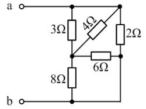
提示
P 点直通底线，先把 M 右侧两条支路归并
解答
P 与底线直连。–：；–底：。 两段串联后与 –底 的 2Ω 并联：
复盘
斜跨的 4Ω 与竖直的 3Ω 都接在 N、M 之间——拓扑先重画成「并排」，串并联一眼可见。
填 12
理想电压源与理想电流源_______进行相互变换（填「能」或「不能」）。
解答
不能（理想电压源内阻为零、理想电流源内阻无穷大，变换公式要求同一个有限 ）。
复盘
带电阻的实电源才能互变；两条「理想」之间没有桥。
5. 计算题
计 1（图 2.18）
利用电源的等效变换求电路中电流 （要求画出体现等效变换的每个过程）。
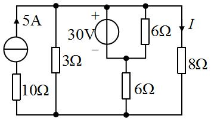
提示
30V 理想源把上母线电位钉死；I 的箭头在哪条支路，最后一步就在哪条支路上算
解答（变换链条，按图读数： 的箭头在右侧竖线顶端、属 8Ω 支路）：
① 5A 源串联 10Ω：串联支路电流被钉死，对外就是 5A 理想源（10Ω 不参与对外特性）； ② 上 6Ω 与 30V 源并联在顶线与中节点 M 之间：理想电压源吞掉并联电阻，这段对外就是 30V 理想源； ③ 于是顶线到底线只剩三条支路：3Ω、8Ω、「30V 串下 6Ω」。对顶线节点写 KCL：
复盘
⚠ 本题 的箭头位置两读并存（8Ω 支路 2 A / 上 6Ω 支路 5 A），按盲测两遍读图取 2 A， 请对教材图复核箭头位置。变换要点：电流源串电阻直接化简、电压源吞并联电阻、最后一条 KCL 收口。
计 2（图 2.19）
利用电源的等效变换求电路中电流 （要求画出体现等效变换的每个过程）。
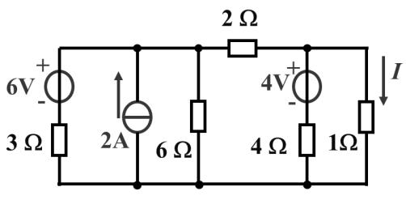
提示
2Ω 左右各自是一组可并联化简的一端口，各自变完再用一条导线连起来
解答
2Ω 把电路分成左右两组一端口。左组（节点 A 对地）： ；右组（节点 B 对地）： 。两组之间经顶线 2Ω 相连。设底线为 0，对 A、B 写 节点方程：
复盘
等效变换在这题的作用是「分组」：左右两组各自是一个可化简的一端口，中间只靠 2Ω 相连。 化简的先后顺序对结果不敏感，但对「谁跟谁并联」敏感——动手前先把每组包含哪些支路圈出来。
计 3（图 2.20）
用等效变换的方法，求电路中的电流 。

提示
两个理想电压源（10V、4V）各把一个节点电位钉死，直接用节点法收尾
解答
设底线为 0。10V 的 − 端接节点 ：（ 为 10V + 端所在顶点）； 4V（− 左 + 右）串在顶线：（ 为 4V 右端顶点，即 4Ω 左端）。对内部 节点写 KCL 解得 V，4Ω 串 5Ω 支路的上端电位 V：
复盘
顶线上串着两个理想电压源时，「超节点」把被源隔开的顶点合成一个节点处理——等效变换做到 最后一步往往就是节点法，两种方法不冲突。
计 4（图 2.21）
求电路的等效电阻 。
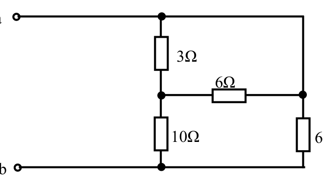
提示
右侧竖线上段（顶到 C）是纯导线——a、C 同电位，电桥其实不存在
解答
顶线把 a 与 C 连成同一节点。（a–B）与 （B–C=a）并联 = ； 串 （B–底）得 ；右下 （a–底）与它并联：
复盘
与第二章选 6 同一招——先找「纯导线连通的大节点」，串并联关系立刻塌缩成两步。
计 5（图 2.22）
用等效变换的方法，求电路中的电流 。
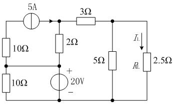
提示
20V 理想源钉死 M 点电位，从 M 向两侧各推一层
解答
V（20V 源 + 上，M–底）。左支：顶点 经上 10Ω 接 M、5A 源从 流向 N1—— 节点 KCL： V。右侧：N1、N2 节点 KCL：
复盘
理想电压源钉电位 + 节点 KCL 逐层推进——这题没有一步需要「电源变换」的完整仪式，但每条 支路电流都用得上「电流源钉电流、电压源钉电位」两条性质。
计 6（图 2.23）
求电路中的电流 。
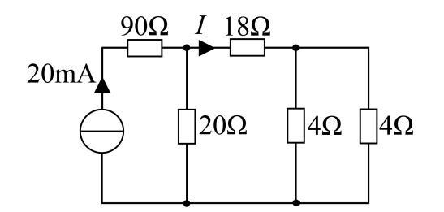
提示
与第一章图 1.24 同构——先折右侧，再对半分
解答
自右向左：两 4Ω 并联 = 2Ω；串 18Ω = 20Ω；与 A 点 20Ω 并联 = 10Ω。20mA 全部流过 90Ω 到 A， 在 A 点对半分：
复盘
与第一章计算 2 是同一道题的重印（图重画、数值不变）。第二次遇到，应当直接写「对半分」。
计 7（图 2.24）
用等效变换的方法求电路中的电流 。
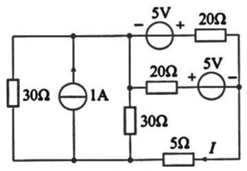
提示
右侧竖线是一条贯通导线（三个端都接它），先把「谁跟谁同节点」标出来
解答
右侧竖线为同一节点 （顶段 20Ω 右端、中支路 5V 的 − 端、底部 5Ω 右端同电位）。 两个 5V 源分别钉住两条 20Ω 支路的内侧端电位：上支路内侧 、中支路内侧 （ 为 N1/N2 侧电位）。两条 20Ω 支路的电流都汇入 、经 5Ω 入地：
复盘
这题的「等效变换」其实是识别同节点：两个 5V 源把两条支路的电流算出来后，剩下的就是 一个 KCL。理想电压源串联在支路里时，先用「± 源值」修正该支路内侧电位，再写欧姆定律。
计 8（图 2.25）
求电路图中的电流 。
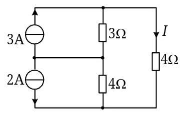
提示
先确认两个电流源的箭头方向——它们决定 M 节点 KCL 的符号
解答
按盲测两遍读图：3A 箭头向上（M→顶）、2A 箭头向下（顶?M→底）。设顶节点电位 、 中节点 （底线 0）：
复盘
⚠ 抄题与盲测对 2A 源的箭头方向读数相反（↑/↓），按盲测两遍读图取「向下」、 A； 若原书箭头向上则 A——请对教材图复核。两个不等值理想电流源经节点相连时， 谁也不「吞掉」谁，老实列节点方程。
计 9（图 2.26）
求无源二端网络的等效电阻 。
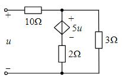
提示
外施 、流入 ；受控源的值 直接用端口电压表示
解答
按图，受控电压源极性 + 上（A 侧）− 下（2Ω 侧）。端口电流 流入 + 端： ；受控源支路电流（向下）；A 节点 KCL：
复盘
⚠ 受控源极性若为 − 上 + 下，则 ——两种读数给出一对相反的答案， 按盲测读图取 ，请对教材图复核极性。负电阻的物理含义：受控源在一端口内部 向外送能量，端口看进去像「负的电阻」。
6. 小结
第二章的题面花样多，底层只有三句话：
- 理想源吞元件：电压源吞并联（选 4、7），电流源吞串联（选 8、11、13）——先把被吞的元件划掉， 电路立刻变简单。
- 实电源互换：串 的电压源 ⟷ 并 的电流源，， 不变（计 2 的变换链、 填 3/8/9/11/13 四连空）。
- 受控源保留控制量：受控源可以参与变换，但控制量（、）必须在最终方程里能算出来 （填 2/6/7、计 9）；含受控源的一端口可以等效出负电阻。
完成边界
- 已整理：第二章 34 题题面逐字转抄 + 配图 26 张入库（图 2.7、2.21 为矢量渲染）；全部解答与复盘。
- 双签：2026-09-28，两名独立子代理只拿题面与配图重算 34 题：与整理者逐项对照，22 题直接一致； 3 处按图修正整理者初解（填 2(a) 与填 6 的 、计 4 的 ）， 2 处整理者修正盲测（计 1 的 归属、计 9 的极性口径照盲测读数采 −5.6 Ω）；计算题均附功率平衡校验。
- 〔待核对〕：① 选 2 原图电阻读 1 Ω、选项 B 写 2 Ω，两处对不上；② 选 3 数值为读图近似 （0.48–0.49 → 选项 0.5）；③ 计 1 的 箭头归属（8Ω 支路 2 A / 上 6Ω 支路 5 A）； ④ 计 8 的 2A 源箭头方向（↑ 则 17/11 A、↓ 则 1/11 A，本页取 ↓）；⑤ 计 9 受控源极性 （+ 上 − 下 则 −5.6 Ω、反之 +2.8 Ω，本页取前者）。以上均请对教材图复核。
- 未完成：第三至九章（按课程进度分章推进）。